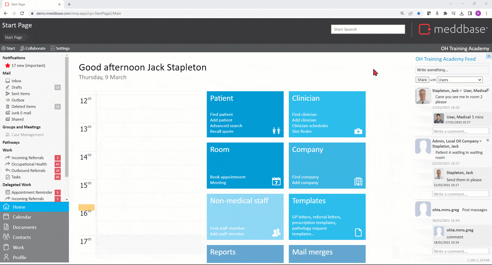

The Report Builder is a system feature of Meddbase allowing you to build complex report queries and monitor clinic performance, patient population health, security audit data and more.
Furthermore the Report Query Builder allows you to export data sets to Microsoft Excel, and/or access data sets via secure HTTPS connections to move data into your own report visualisation applications like Microsoft PowerBI, YellowFin, Excel or Tableau.
The process of building a report querying Billing Rules can be broken down into the following steps:
1. From the Start Page navigate to Admin > Report management*.
2. Click New report query to open the Query Builder.
3. Select Billing Rules in Rule Set from the list of tables as the Root Table**.
4. Click Next to proceed to the Column Builder.
*Building reports requires access to the Admin section.
**Selecting a Root Table determines what will be displayed in each Row of your report e.g. selecting Billing Rules in Rule Set as the Root Table will display an instance of a rule in each row. It also displays the Column Preview on the right-hand side, allowing you to view the Columns available in the selected table, as well as connected tables.
Click here for a detailed article on selecting a root table.

Querying the Rule Set position on a Charge Band
Adding columns
Having selected the Root Table you can build your query by adding columns:
1. Click New Column in the upper left corner of the Column Builder page.
2. Expand Columns and select relevant columns (hold down Ctrl on your keyboard to select multiple columns in a row) from the below list:
ID - this column displays the ID number of each Billing Rule instance.
Rule Name - this column displays the full name of each Billing Rule instance.
Owner Rule Set Name - this column displays the name the Rule Set that owns each Billing Rule instance*.
*When reporting on Rule Set position on a Charge Band, the Owner Rule Set is the Charge Band.
Sort Order - this column displays the sort order** (position) of each Billing Rule instance on the Owner Rule Set.
**0 stands for top/1st position in the Owner Rule Set, 1 stands for subsequent/2nd position and so on.
Using a linked Table and Filter Builder
In this example you are reporting on a specific Type of rule, a Rule Set.
Therefore, to avoid reporting on all other rule types you can narrow down your query to just the required type:
Click New Column in the upper left corner of the Column Builder page.
Expand the Billing Rule table, expand Columnsand select the Kind column.
Click Edit in the Filter section.
Click Add Condition and click in the Select column or parameter field.
Select the Billing Rule Kind column.
Define the condition as Billing Rule Kind[equals] [value] RuleSet.billrule.
Once you have built the query, you can save it and subsequently publish the report so that it can be user by other users in your Meddbase chamber:
1. Click Saveand enter a name in the Select report name and click Ok. (Adding Folder Name/ in front of the name will create a folder and place the report in it.
2. Click Report Files Administration on the Breadcrumb Trail in the top left part of the page.
3. Click the folder you created and click the report found in it.
4. Click Publish report.
Meddbase users in your chamber will now be able to run the query from the Start Page by clicking the Reports tile and selecting the report.
The results can be exported to Excel for further analysis by clicking the export icon: